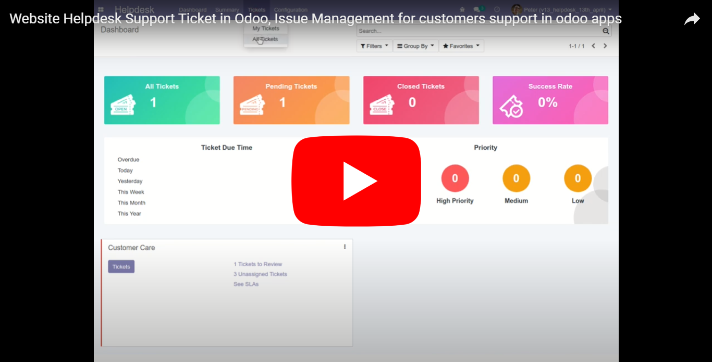
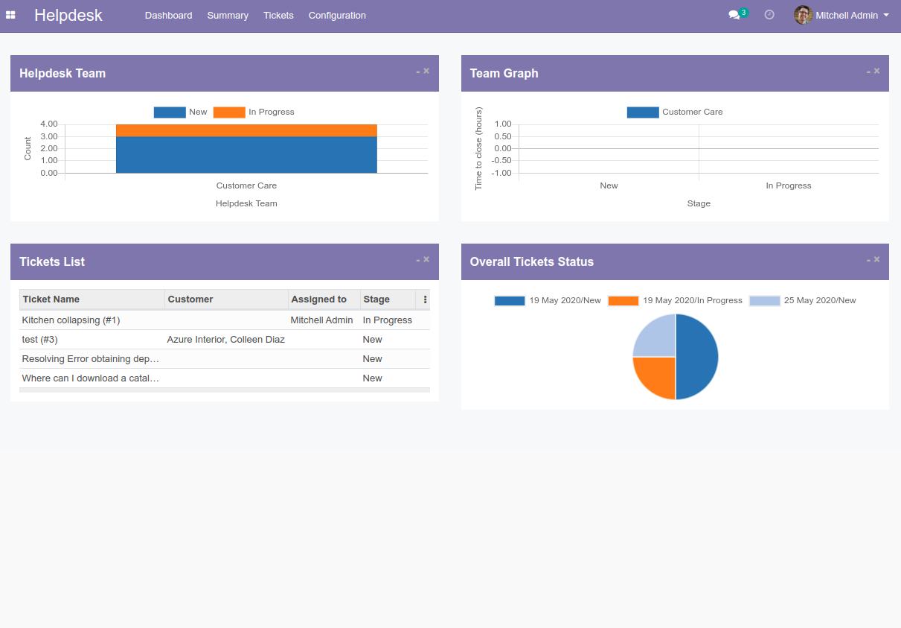
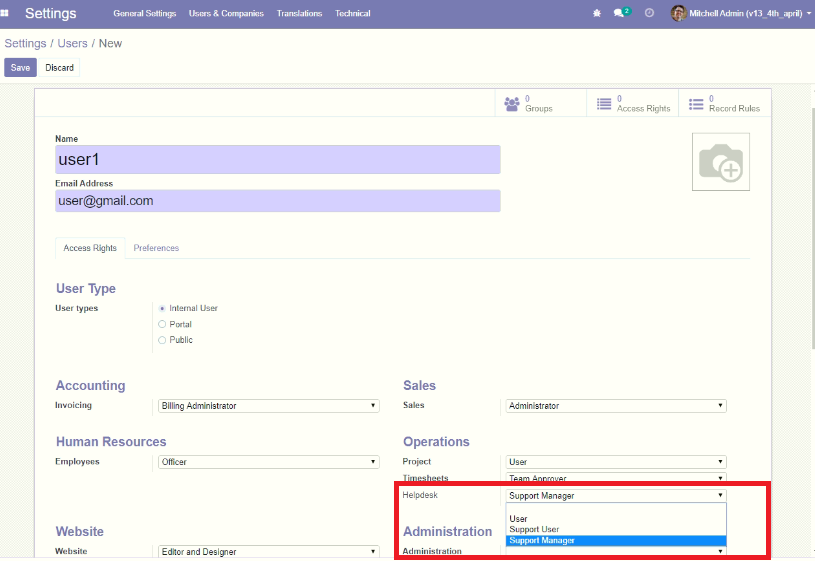
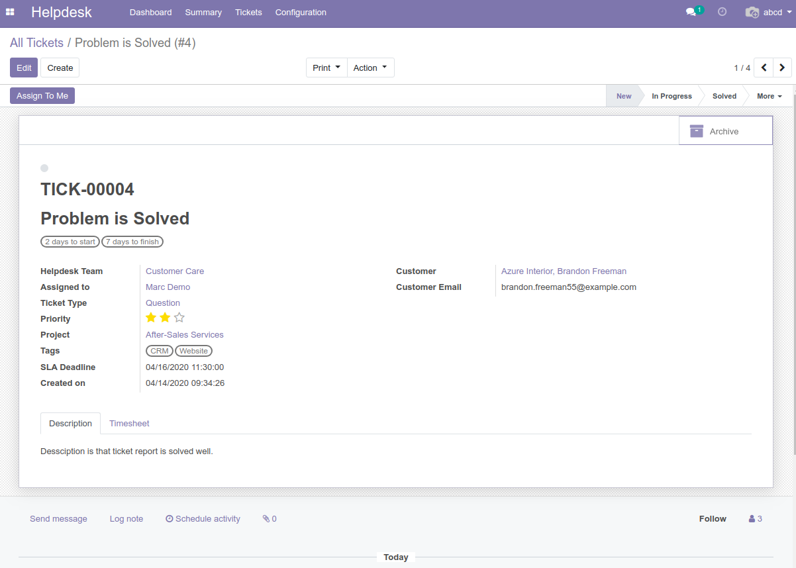
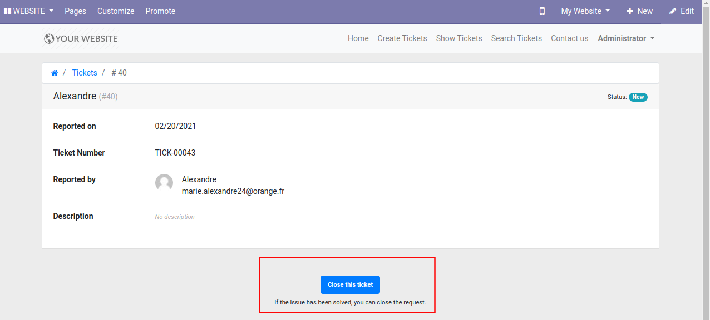
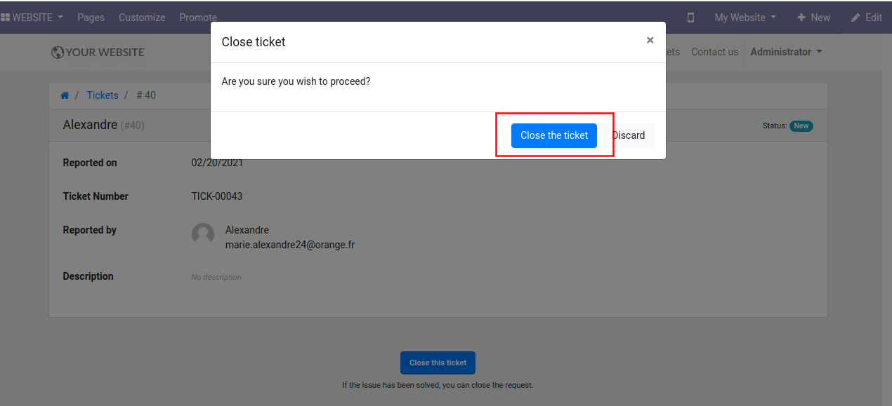
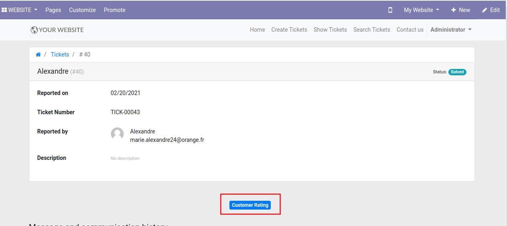
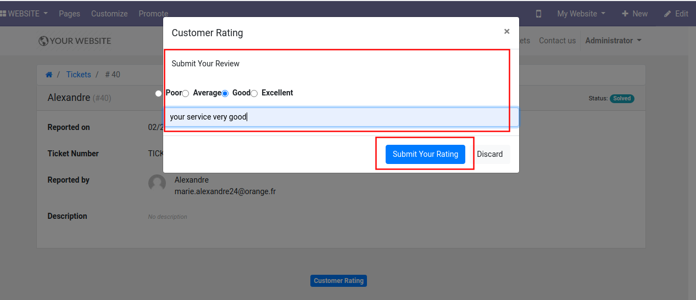
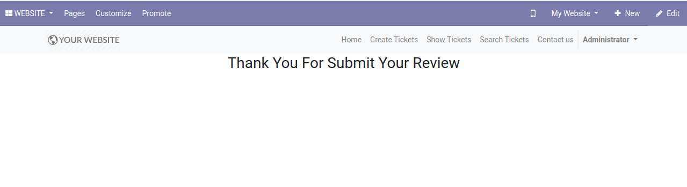
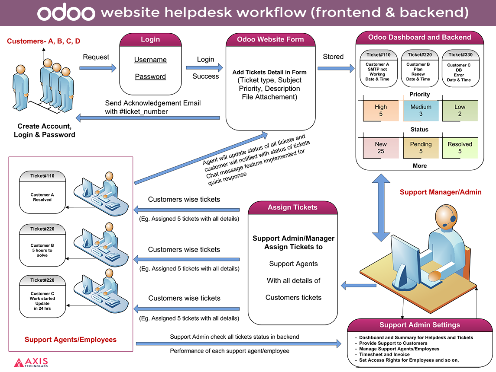

Odoo Helpdesk Support Ticket and Issue Management Module with Ticket Portal
This Odoo Helpdesk Support Ticket Module allows you to manage and create Support Tickets for customers and access Ticket Portal for complete Issue Management.
Key Features of odoo helpdesk :
- Odoo Helpdesk dashboard for monitoring all activity of the helpdesk system in odoo backend
- Allow customers to create a ticket by odoo Helpdesk Website form; the ticket automatically creates an odoo backend
- Customers can check the status of all submitted support tickets in the Account section of the odoo website
- Admin handle tickets and assign to support agent from odoo backend
- Customer upload file in attachment and Support team can check to provide support to customers
- Chatterbox for customers and support agents, technicians with tech support portal, and support managers can communicate
- Support Agent or technician fill timesheets on a ticket to provides paid support to customers
- The Support Manager or Support Agent can close tickets and send the invoice to customers through the customer support system
- Customers can set priority for a ticket (Urgent, high, low) with our website helpdesk support Ticket Management in odoo
- Email notification settings for every activity of support tickets
- Create customer support ticket invoices from timesheets in the Customer Support and Helpdesk system in Odoo
- The support manager easily creates an invoice with the help of timesheets with a few clicks
- The support agent can inform customers to manage helpdesk ticket stages under support tickets in odoo
- The customer submits the ticket subject so the support agent or support manager can understand the customer ticket and provide support
- The customer can submit rating and review/comments on particular ticket
- The customer can login and close their ticket from website helpdesk frontend
- Filter option in odoo backend for view customer ratings and review/comments
- Roles and Rights - set roles and rights to support agent/helpdesk employee for work in helpdesk system
Menu Available:
- Helpdesk
- Dashboard for Tickets
- Helpdesk Tickets List
- Invoicing
- Timesheets to Invoice
- Configuration
- Helpdesk Team
- Tickets
- Views
Cut down on time thieves. Take quick actions like assignments, changing priority, ticket status, and due date right there on the DASHBOARD ticket list with our Odoo website customer helpdesk support Ticketing System. Website Helpdesk Module - provides a website interface for submitting requests by the users. Read the Website Service Desk module guide for more information.
Customize the data collected from users when submitting a ticket to help get straight to the issue on issue ticketing system dashboard. This odoo website service desk system allows you to define rules to route incoming tickets to the right department, agents, and trigger actions.
 WATCH VIDEO DEMOThis module supported Odoo Community and Odoo Enterprise edition (If you want to run in enterprise edition you have to uninstall existing helpdesk module)


Features of Website Helpdesk Module

Odoo HelpDesk Dashboard
Our rich and modern dashboard keeps you up-to-date on your help desk statistics

Manage Support Executive
Add, edit, and delete your support employees or support agents and set access

Customer Support Portal in odoo
Customer support portal odoo website to help your business manage tickets
Report of Each Users
You simply see all activity and report of support users and customers
Ticket Filters
Helpdesk Ticket feature allows to the right tickets goes to the right department

Email Notification
Configurable auto email sending mechanism when customer create support ticket from odoo website
Agents/Support Executives
HelpDesk Support admin allow staff to assign tickets during response to avoid confliction
Assign, Status, Resolved
Transfer tickets between departments when being handled by the correct agents with status

Odoo Website Portal
All support responses are display in odoo website helpdesk tickets menu for customers
Tasks for Agents
Tasks can be associated with tickets or they can stand alone in the help desk
Summary Option
Summary Menu for Future v/s current ticket status check this will display in admin
Calender View
from odoo helpdesk support admin you can see all ticket in calender view
Bill/invoices from a list
Support Manager can close tickets and send invoice to customers as per timesheet

Document Attachment
Document attachment functionality implement in odoo website frontend form

Responsive Website Form
Added features in odoo HelpDesk support form for create customer tickets request
Customer can close their ticket
The customer can submit rating and review/comments on particular ticket
Rating and comment on perticular service
The customer can login and close their ticket from website helpdesk frontend
Backend filter and view customer review
Filter option in odoo backend for view customer ratings and review/comments

Roles and Rights
In this odoo website helpdesk support module allows set roles and right for users

Kanban View
Create custom feild in kanban view and drag and drop ticket with it's status
List view
Perfect user interface for listing all ticket display in list view for Support Admin/Support Agent

Star sign for priority
When customer create support request through star field for set priority(Urgent, High, Medium)

Activity View
from odoo helpdesk support admin you can see all ticket in activity view

Chatter Message Send
Chatter Message Send feature available for customer they can write and send to admin/agents
Website HelpDesk Module and HelpDesk Support using Customer Tickets:
A customer support module that built for best practices and rated as the best help desk support by multiple independent industry sources.

This module will help you in Quick Reply - Sometimes all that is needed on a ticket is an acknowledgment. Interact faster with Instant preview and Quick reply without ever having to open the ticket.
Bulk Response - Quickly select related tickets and apply bulk actions like changing ticket status, assignee and due dates, Admin can assign multiple tickets to multiple support agents.
Odoo Helpdesk Screenshots and Flow
Odoo Helpdesk Dashboard - Customer Ticket based Support Website HelpDesk Management

Summary - Overall Status of HelpDesk Customer Tickets Status and Reports

Click on Settings => User => Support User (Support Agent/Users Group)

Support User of this helpdesk support module

HelpDesk Team Configuration
You can add helpdesk team and assign to support user.

Helpdesk Team Detail
Add Support User,Manage Team and assign tickets.

Support User can communicate with Support Manager(Admin).(Cannot Create Task and Invoice)

Kanban View - Tickets with Status
Customer tickets status (New, Pending, Progress, Resolved) - You can modified as per your requirement

List View - Tickets with Status
.png)
Form View - Detail page of Customer Ticket

Activity View - Tickets with Status
Manage customer tickets and see all tickets in the activity view
.png)
Calendar View - Tickets with Status
Manage customer tickets and see all tickets in the calendar view

Website Support Ticket Form
Customer can generate ticket with detail and document attachment

Thanks Message- When ticket is created.

Your Tickets on Portal/My Account

Website Chat Box for Sending Message
Customer and Support user can communicate in chatter message box with document attachment
.png)
Backend Chatter Box for Send Message
Support Manager reply in chat message box from backend
.png)
See Message sent by Customer and Attachments in Ticket Detail
.png)
Manage Customer Tickets Document Attachments

Support Manager Assign Tickets to => Support User
.png)
Support Manager(admin) can create task(Optional)

Manage Assign Support User for Assigned Ticket
.png)
Support Manager can create and send Invoice/Bills to customer for payment
.png)

Invoice/Bill Sample

Status of Customer Ticket - (New, Pending, In Progress, Solved)

Manage Timesheet for Support User/Support Manager

Timesheet and Customer Support Ticket Hours
.png)
Close ticket
Close Your Ticket
Filter your Closed ticket in Backend

Add Your Rating
Add Your Rate and Comment
Thank you Page of Submit Rating
Show Rating in Backend

Manage Tickets Report
.png)
Report view in Bar Chart

Report view in Line Chart

Report view in Pie Chart

Print PDF Support Ticket Report

Odoo Website HelpDesk WorkFlow
